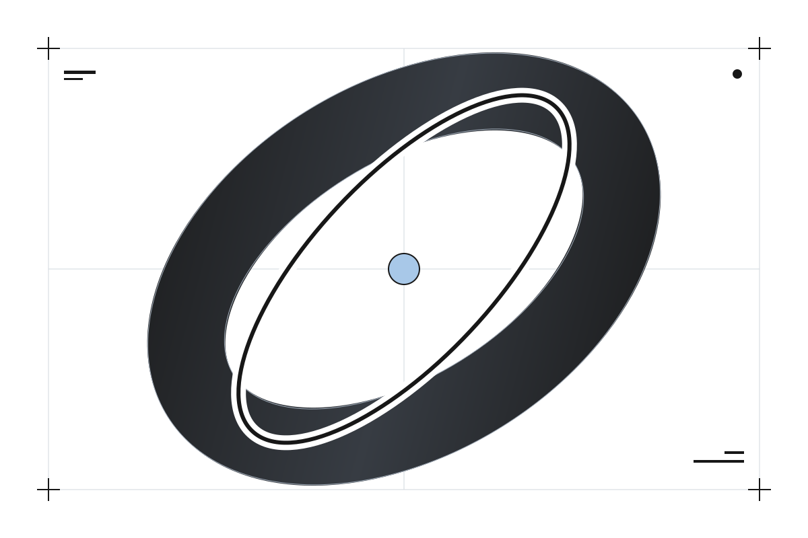
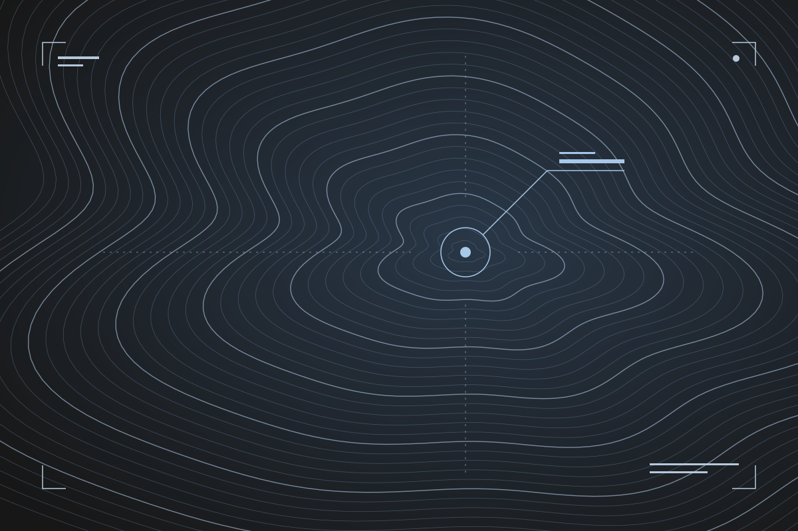
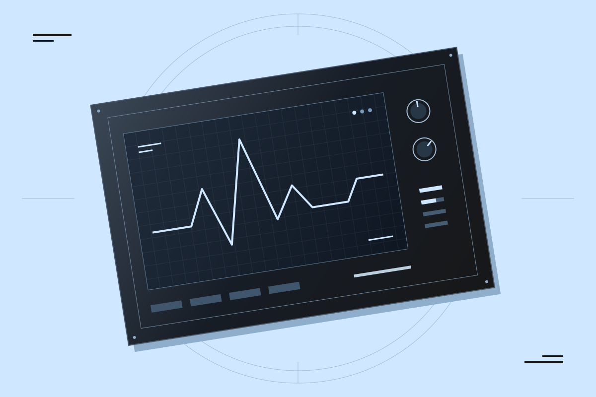

ORBITBRAND STUDY / 001
作品の詳細
軌道の重なりをモチーフに、変化し続けるアイデアを表現した架空のブランド。ひとつの図形から、ポスターやデジタル画面へ展開するビジュアルを考えました。
- テーマ
- 視点・つながり・広がり
- 制作内容
- コンセプト / ビジュアルスタディ
- ステータス
- サンプル・実案件ではありません
CONCEPT PORTFOLIO DESIGN × DEVELOPMENT
小さなひらめきから、心に残る体験を。
RBITAL FORGEのデザインとものづくり。


アイデアを試す、コンセプト作品のプレビュー。
SELECTED WORK / 01
ブランド、ウェブ、ビジュアル。
3つの視点から広がる、ものづくりの実験。
掲載作品はすべて架空のサンプルです。
軌道の重なりをモチーフに、変化し続けるアイデアを表現した架空のブランド。ひとつの図形から、ポスターやデジタル画面へ展開するビジュアルを考えました。

RELAYWEB STUDY / 002点在する情報を、ひとつの流れに。信号を受け渡すリレーを着想に、余白と整列で使いやすさを考えた架空のウェブサービスのデザインスタディです。
等高線のような線の集まりを、デジタルの風景として捉えるビジュアル実験。規則的な形と余白のバランスから、奥行きとリズムを探りました。
ABOUT / 02
RBITAL FORGEは、アイデアと表現の接点を探るためのポートフォリオ。見る人の視点が少し変わるような、そんなものづくりを目指す場所です。
この紹介文は仮の内容です。
プロフィールと実際の活動に合わせて更新予定です。
何を伝え、どんな体験を生み出すか。
まずは、問いを立てるところから。
小さくつくり、確かめ、磨いていく。
思考と実験を往復する。
完成をひとつの出発点に。
次のアイデアにつながる余白を残す。
THE PROCESS / 03
考える。つくる。磨く。
シンプルな積み重ねを、大切に。
見つける
テーマを観察し、問いを立てる。
つくるものの軸を見つけます。
かたちにする
アイデアを小さく試作する。
見て、触れて、確かめます。
磨きつづける
気づきをもとに、細部を整える。
次の可能性へつなげます。